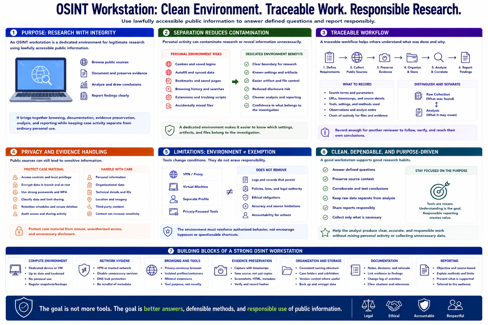

What Is an OSINT Workstation?
Connecting to LMS... Progress: in progress

Narration
An OSINT workstation is a dedicated environment for legitimate research using lawfully accessible public information. It brings together browsing, documentation, evidence preservation, analysis, and reporting while keeping case activity separate from ordinary personal use.
Separation reduces contamination. Personal cookies, saved accounts, autofill, bookmarks, and browsing history can confuse research or reveal information unnecessarily. A dedicated environment makes it easier to know which settings, artifacts, and files belong to the investigation.
The workstation should support a traceable workflow. Analysts need to record requirements, preserve URLs and timestamps, organize public documents and captures, distinguish raw collection from analysis, and produce reports that another reviewer can understand.
Privacy and evidence handling matter as much as search capability. Case material may contain sensitive personal, organizational, or technical details even when sources are public. Access controls, encryption, retention, and controlled sharing protect that material from misuse.
A workstation does not guarantee anonymity, accuracy, or legal authority. A VPN, virtual machine, or separate profile changes technical conditions but does not erase logs, policy, ethics, or accountability. The environment must reinforce authorized behavior rather than encourage bypasses.
The goal is a clean and dependable research system. It should help an analyst answer defined questions, preserve source context, test conclusions, and report responsibly without mixing personal activity, collecting unnecessary data, or turning tool experimentation into the purpose of the work.